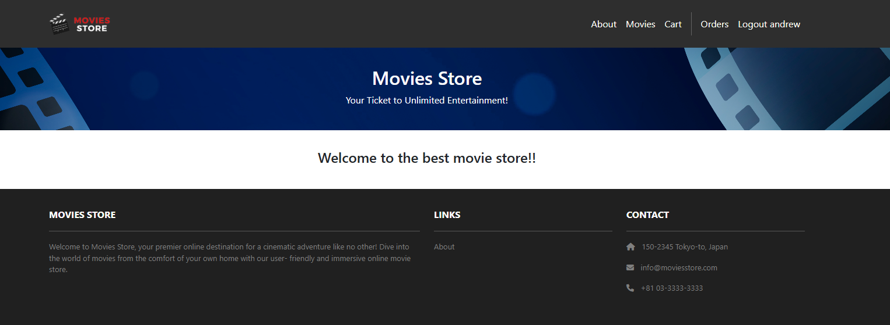
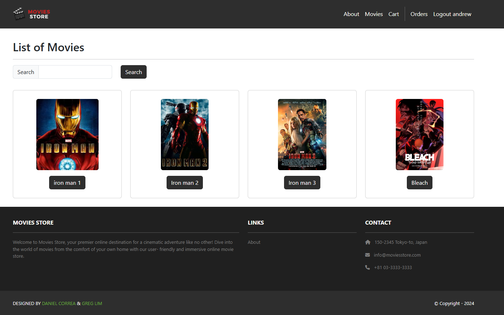
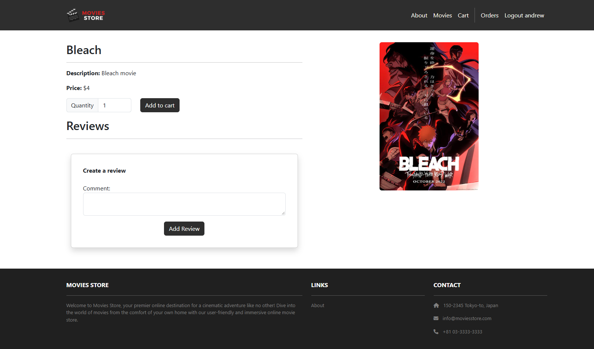
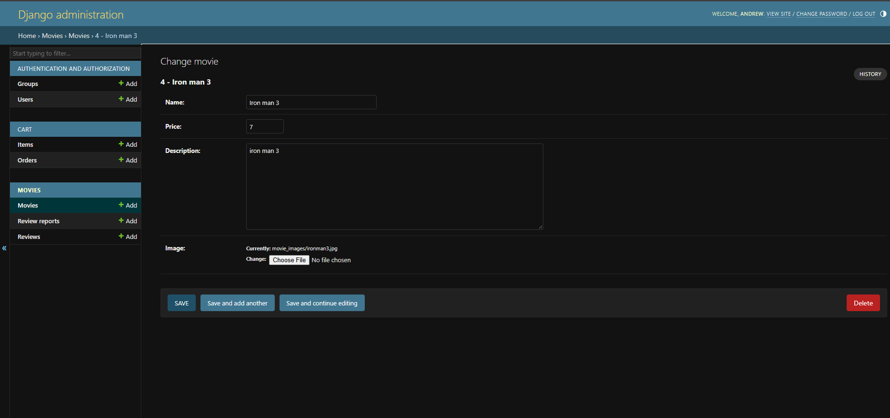
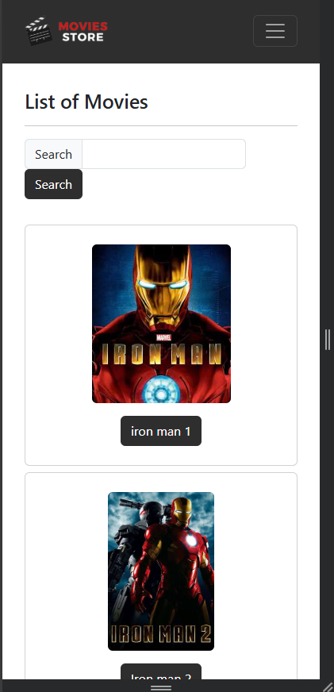

The app
Visitors browse a film catalog, search it, review what they've seen, fill a cart, and check out. Administrators manage everything behind it.

Home and About
A landing page introducing the store, and an About page describing what it offers. Both sit in the navigation on every page.
Story 1
Catalog and search
Films appear as a grid of posters with titles and prices. The search field matches partial titles, case-insensitively, so a fragment is enough.
Stories 4, 5
Film detail and reviews
Full description, price, poster, and the review thread. A quantity selector adds copies to the cart; signed-in visitors get a review form, and can edit or delete their own reviews. Someone else's review shows a Report control instead — reporting hides it from the page.
Stories 8, 10, 11, 12, 13, 21
Cart, checkout, and order history
The cart lives in the session, so items survive navigation without an account. It shows each film, quantity, and running total, and empties in one action. Checkout requires signing in and writes a permanent order; every account has a page of past orders with dates and totals.
Stories 2, 3, 6, 7, 9, 14
Administration
Films, reviews, review reports, orders, and accounts are all managed through the Django admin, with full create, update, and delete across each.
Stories 17, 18, 19, 20
Responsive across devices
A Bootstrap grid and a collapsing navigation bar carry the layout from desktop down to phone, in any modern browser.
Stories 15, 16- Django 5.0
- Python 3.12
- MariaDB
- Bootstrap 5.3
- Pillow